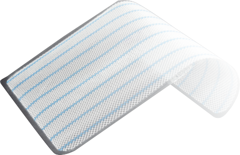
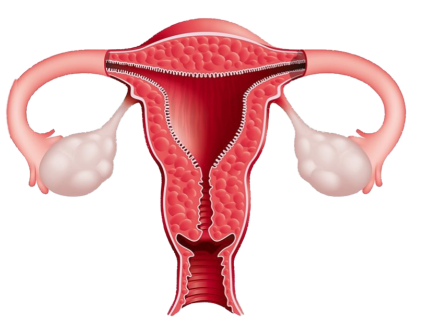

An adhesive used to bond wound edges together.
Wound Closure
The process of closing a wound after surgery or injury.
Wound Healing
The process by which a wound repairs itself over time.
Wound Hemostasis
The process of stopping bleeding from a wound.
Wound Repair
The restoration of tissue following injury or surgery.
Wound Sealing
The act of closing and protecting a wound.
Wound Sterilization
The process of
eliminating
microorganisms
from a wound.
Zinc Oxide
Adhesive

An adhesive containing
zinc oxide used for wound closure.
Amenorrhea
Absence of menstrual periods.
Androgen
Male sex hormone that influences male traits and reproductive activity.

Anovulation
Absence of ovulation in a menstrual cycle.
Aromatase Inhibitor
Medication that blocks the conversion of androgens to estrogen.
Atrophic Endometrium
Thinning of the endometrial lining of the uterus.
Bacterial Vaginosis
Vaginal infection caused by an imbalance of normal bacteria.
Breakthrough Bleeding
Vaginal bleeding occurring between regular menstrual periods.
Cervical Canal
The passageway in the cervix connecting the vagina to the uterus.
Cervical Dysplasia
Abnormal changes in the cervical